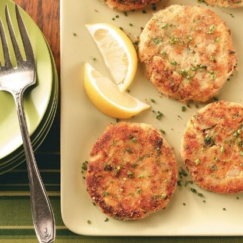

Tuna Zucchini Cakes
What is Tuna Zucchini Cakes?
The ultimate healthy zucchini tuna cakes (tuna patties) made with gluten-free, paleo and low carb ingredients. Baked in the oven and require no breadcrumbs! High protein, omega 3 rich and a quick and easy weeknight dinner or lunch meal prep recipe.
Ingredients
1 tablespoon butter
1/2 cup finely chopped onion
1 pouch (6.4 ounces) light tuna in water
1 cup seasoned bread crumbs, divided
1 cup shredded zucchini
2 large eggs, lightly beaten
1/3 cup minced fresh parsley
1 teaspoon lemon juice
1/2 teaspoon salt
1/8 teaspoon pepper
2 tablespoons canola oil
Instructions / How to Cook
1. In a large saucepan, heat butter over medium-high heat. Add onion; cook and stir until tender. Remove from heat.
2. Add tuna, 1/2 cup bread crumbs, zucchini, eggs, parsley, lemon juice, salt and pepper to onion mixture; mix lightly but thoroughly. Shape into six 1/2-in.-thick patties; coat with remaining bread crumbs.
3. In a large skillet, heat oil over medium heat. Add patties; cook 3 minutes on each side or until golden brown and heated through.